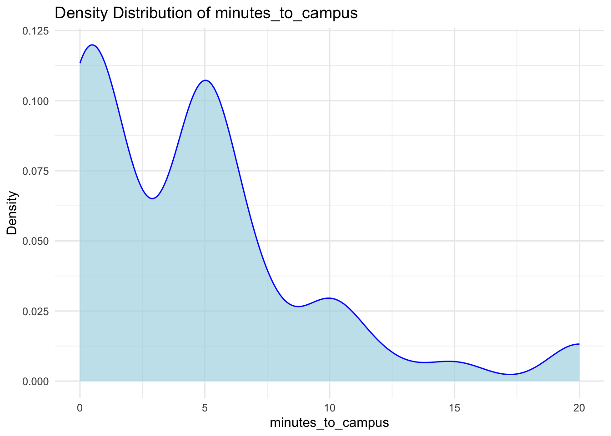

11 Univariate Visualization
12 3 Univariate Viz
12.1 Learning Goals
- Convince ourselves about the importance of data viz.
- Explore the “grammar of graphics”.
- Familiarize yourself with the ggplot() structure and grammar.
- Build univariate viz, i.e. viz for 1 variable at a time.
- Start recognizing the different approaches for visualizing categorical vs quantitative variables.
12.2 Additional Resources
For more information about the topics covered in this chapter, refer to the resources below:
- Intro to ggplot (YouTube) by Lisa Lendway
- Univariate viz interpreting (YouTube) by Alicia Johnson–you can ignore the parts about numerical summaries.
- A grammar for data graphics (html) by Baumer, Kaplan, & Horton
- Data visualization (html) by Wickham, Çetinkaya-Rundel, & Grolemund
- Visualizing distributions (html) by Wilke
- ggplot cheatsheet (pdf)
12.3 3.1 Background
We’re starting our unit on data visualization or data viz, thus skipping some steps in the data science workflow. Mainly, it’s tough to understand how our data should be prepared before we have a sense of what we want to do with this data!
12.3.1 3.1.1 Importance of Visualizations
12.3.1.1 Example 1
The data below includes information on hiking trails in the 46 “high peaks” in the Adirondack mountains of Northeastern New York state. This includes data on the hike’s highest elevation (feet), vertical ascent (feet), length (miles), time in hours that it takes to complete, and difficulty rating. Open this data in a viewer, through the Environment tab or by typing View(hikes) in the console.
12.3.1.2 Discussion
- What is the pattern / trend of elevation of hiking trails?
- What is the relationship between a hike’s elevation and typical time it takes to summit / reach the top?
12.3.1.3 Example 2
Look at the plot below taken from a story reported by this New York Times article.
12.3.1.4 Discussion
Suppose that the article tried telling the story without using data viz, What would that story be like?
12.3.1.5 Benefits of Visualization
- Understand what we’re working with from
- scales & typical outcomes, to
- outliers, i.e. unusual cases, to
- patterns & relationships
- Refine research questions & inform next steps of our analysis.
- Communicate our findings and tell a story.
12.3.2 3.1.2 Components of Data Graphics
12.3.2.1 Example 3
Data viz is the process of mapping data to different plot components. For example, in the NYT example above, the research team mapped data like the following (but with many more rows!) to the plot.
| observation | decade | year | date | relative temp |
|---|---|---|---|---|
| 1 | 2020-30 | 2023 | 1/23 | 1.2 |
| 2 | 1940-60 | 1945 | 3/45 | -0.05 |
12.3.2.2 Discussion
Write down step-by-step directions for using a data table like the one above to create the temperature visualization. A computer is your audience, thus be as precise as possible, but trust that the computer can find the exact numbers if you tell it where.
COMPONENTS OF GRAPHICS
In data viz, we essentially start with a blank canvas and then map data onto it. There are multiple possible mapping components. Some basics from Wickham (which goes into more depth):
a frame, or coordinate system
The variables or features that define the axes and gridlines of the canvas.
a layer
The geometric elements (e.g. lines, points) we add to the canvas to represent either the data points themselves or patterns among the data points. Each type of geometric element is a separate layer. These geometric elements are sometimes called “geoms” or “glyphs” (like heiroglyph!)
scales
The aesthetics we might add to geometric elements (e.g. color, size, shape) to incorporate additional information about data scales or groups.
faceting
The splitting up of the data into multiple subplots, or facets, to examine different groups within the data.
a theme
Additional controls on the “finer points” of the plot aesthetics, (e.g. font type, background, color scheme).
12.3.2.3 Example
In the NYT graphic, the data was mapped to the plot as follows:
- frame: x-axis = date, y-axis = temp
- layers: add one line per year, add dots for each month in 2023
- scales: color each line by decade
- faceting: none
- a theme: NYT style
12.3.3 3.1.3 ggplot + R packages
We will use the powerful ggplot tools in R to build (most of) our viz. The gg here is short for the “grammar of graphics”. These tools are developed in a way that:
- recognizes that code is communication (it has a grammar!)
- connects code to the components / philosophy of data viz
EXAMPLES: ggplot in the News
- MPR journalist David Montgomery: R data viz
- BBC R data viz
To use these tools, we must first get them into R/RStudio! Recall that R is open source. Anybody can build R tools and share them through special R packages. The tidyverse package compiles a set of individual packages, including ggplot2, that share a common grammar and structure. Though the learning curve can be steep, this grammar is intuitive and generalizable once mastered.
To install this package, do the followings: RStudiio –> “Packages” pane –> click “Install” –> type the name of the package (tidyverse) and make sure the “Install dependencies” box is checked –> and click “Install”.
Unless the authors of a package add updates, you only need to do this once all semester.
Mac’s RStudio server
If you’re working on Mac’s RStudio server, tidyverse is already installed on the server! Check this 2 ways:
- Type library(tidyverse) in your console. If you don’t get an error, it’s installed!
- Check that it appears in the list under the “Packages” pane.
12.4 3.2 Exercises
12.4.1 Exercise 1: Research Questions
Let’s dig into the hikes data, starting with the elevation and difficulty ratings of the hikes:
peak elevation difficulty ascent length time rating
1 Mt. Marcy 5344 5 3166 14.8 10.0 moderate
2 Algonquin Peak 5114 5 2936 9.6 9.0 moderate
3 Mt. Haystack 4960 7 3570 17.8 12.0 difficult
4 Mt. Skylight 4926 7 4265 17.9 15.0 difficult
5 Whiteface Mtn. 4867 4 2535 10.4 8.5 easy
6 Dix Mtn. 4857 5 2800 13.2 10.0 moderateWhat features would we like a visualization of the categorical difficulty rating variable to capture?
Answer: For the categorical difficulty rating variable, we would want to visualize how many hikes fall into each category (easy, moderate, difficult). This would help us understand the distribution of difficulty levels among the hikes.
What about a visualization of the quantitative elevation variable?
Answer: For the quantitative elevation variable, we would want to see the range of elevations, the typical or most common elevations, how the elevations are distributed across that range, and if there are any unusual or outlier elevations.
12.4.2 Exercise 2: Load tidyverse
We’ll address the above questions using ggplot tools. Try running the following chunk and simply take note of the error message – this is one you’ll get a lot!
Error in ggplot(hikes, aes(x = rating)): could not find function "ggplot"In order to use ggplot tools, we have to first load the tidyverse package in which they live. We’ve installed the package but we need to tell R when we want to use it. Run the chunk below to load the library. You’ll need to do this within any .qmd file that uses ggplot().
── Attaching core tidyverse packages ──────────────────────── tidyverse 2.0.0 ──
✔ dplyr 1.1.4 ✔ readr 2.1.5
✔ forcats 1.0.0 ✔ stringr 1.5.1
✔ ggplot2 3.5.2 ✔ tibble 3.2.1
✔ lubridate 1.9.4 ✔ tidyr 1.3.1
✔ purrr 1.0.4
── Conflicts ────────────────────────────────────────── tidyverse_conflicts() ──
✖ dplyr::filter() masks stats::filter()
✖ dplyr::lag() masks stats::lag()
ℹ Use the conflicted package (<http://conflicted.r-lib.org/>) to force all conflicts to become errors12.4.3 Exercise 3: Bar Chart of Ratings - Part 1
Consider some specific research questions about the difficulty rating of the hikes:
- How many hikes fall into each category?
- Are the hikes evenly distributed among these categories, or are some more common than others?
All of these questions can be answered with: (1) a bar chart; of (2) the categorical data recorded in the rating column. First, set up the plotting frame:

Think about:
-
What did this do? What do you observe?
Answer: This created a blank canvas with the x-axis labeled with the different categories of the rating variable (easy, moderate, difficult), but without any data plotted yet.
-
What, in general, is the first argument of the ggplot() function?
Answer: The first argument is the data frame we want to use, in this case
hikes. -
What is the purpose of writing x = rating?
Answer: This maps the rating variable from our dataset to the x-axis of our plot.
-
What do you think aes stands for?!?
Answer: “aes” stands for “aesthetics”, which defines how variables in the data are mapped to visual properties of the plot.
12.4.4 Exercise 4: Bar Chart of Ratings - Part 2
Now let’s add a geometric layer to the frame / canvas, and start customizing the plot’s theme. To this end, try each chunk below, one by one. In each chunk, make a comment about how both the code and the corresponding plot both changed.
NOTE:
- Pay attention to the general code properties and structure, not memorization.
- Not all of these are “good” plots. We’re just exploring ggplot.
# COMMENT: Added geom_bar() which creates a bar chart showing counts of hikes in each rating category
ggplot(hikes, aes(x = rating)) +
geom_bar()
# COMMENT: Added labels to the x and y axes to make the plot more informative
ggplot(hikes, aes(x = rating)) +
geom_bar() +
labs(x = "Rating", y = "Number of hikes")
# COMMENT: Changed the fill color of the bars to blue
ggplot(hikes, aes(x = rating)) +
geom_bar(fill = "blue") +
labs(x = "Rating", y = "Number of hikes")


12.4.5 Exercise 5: Bar Chart Follow-up
12.4.5.1 Part a
Reflect on the ggplot() code.
-
What’s the purpose of the +? When do we use it?
Answer: The + operator is used to add layers to our plot. We use it whenever we want to add a new component or layer to our visualization.
-
We added the bars using geom_bar()? Why “geom”?
Answer: “geom” stands for “geometric object” - it’s the visual representation of our data (in this case, bars).
-
What does labs() stand for?
Answer: “labs” stands for “labels” and allows us to add or modify labels on our plot, such as axis titles, plot title, etc.
-
What’s the difference between color and fill?
Answer: “color” controls the outline or border of the geometric objects, while “fill” controls the inside color of the geometric objects.
12.4.5.2 Part b
In general, bar charts allow us to examine the following properties of a categorical variable:
- observed categories: What categories did we observe?
- variability between categories: Are observations evenly spread out among the categories, or are some categories more common than others?
We must then translate this information into the context of our analysis, here hikes in the Adirondacks. Summarize below what you learned from the bar chart, in context.
Answer: From the bar chart, I can see that there are three difficulty ratings for the Adirondack high peak hikes: easy, moderate, and difficult. Most of the hikes are rated as moderate, followed by easy hikes, with difficult hikes being the least common. This suggests that the Adirondack high peaks offer a range of hiking experiences but tend toward moderate difficulty.
12.4.5.3 Part c
Is there anything you don’t like about this barplot? For example: check out the x-axis again.
Answer: The x-axis categories are arranged alphabetically (difficult, easy, moderate) rather than in a logical order of increasing difficulty (easy, moderate, difficult). This makes it harder to interpret the data in a meaningful way.
12.4.6 Exercise 6: Sad Bar Chart
Let’s now consider some research questions related to the quantitative elevation variable:
- Among the hikes, what’s the range of elevation and how are the hikes distributed within this range (e.g. evenly, in clumps, “normally”)?
- What’s a typical elevation?
- Are there any outliers, i.e. hikes that have unusually high or low elevations?
Here:
- Construct a bar chart of the quantitative elevation variable.
- Explain why this might not be an effective visualization for this and other quantitative variables. (What questions does / doesn’t it help answer?)

Answer: This bar chart of elevation is not effective because elevation is a continuous variable with many unique values, so almost each bar represents just one hike. This makes it difficult to see patterns in the data, identify the range, determine a typical elevation, or spot outliers. The visualization doesn’t help us understand how the data is distributed across the range of elevations.
12.4.7 Exercise 7: A Histogram of Elevation
Quantitative variables require different viz than categorical variables. Especially when there are many possible outcomes of the quantitative variable. It’s typically insufficient to simply count up the number of times we’ve observed a particular outcome as the bar graph did above. It gives us a sense of ranges and typical outcomes, but not a good sense of how the observations are distributed across this range. We’ll explore two methods for graphing quantitative variables: histograms and density plots.
Histograms are constructed by (1) dividing up the observed range of the variable into ‘bins’ of equal width; and (2) counting up the number of cases that fall into each bin. Check out the example below:

12.4.7.1 Part a
Let’s dig into some details.
-
How many hikes have an elevation between 4500 and 4700 feet?
Answer: Based on the histogram, about 6 hikes have an elevation between 4500 and 4700 feet.
-
How many total hikes have an elevation of at least 5100 feet?
Answer: Based on the histogram, there appear to be 2 hikes with an elevation of at least 5100 feet.
12.4.7.2 Part b
Now the bigger picture. In general, histograms allow us to examine the following properties of a quantitative variable:
- typical outcome: Where’s the center of the data points? What’s typical?
- variability & range: How spread out are the outcomes? What are the max and min outcomes?
- shape: How are values distributed along the observed range? Is the distribution symmetric, right-skewed, left-skewed, bi-modal, or uniform (flat)?
- outliers: Are there any outliers, i.e. outcomes that are unusually large/small?
We must then translate this information into the context of our analysis, here hikes in the Adirondacks. Addressing each of the features in the above list, summarize below what you learned from the histogram, in context.
Answer:
From the histogram of Adirondack high peak elevations, I can see that:
- Typical outcome: Most hikes have elevations around 4300-4500 feet, which appears to be the center of the distribution.
- Variability & range: The elevations range from about 3700 feet to 5300 feet, giving a range of about 1600 feet.
- Shape: The distribution appears roughly symmetric with a slight right skew, meaning there are a few peaks that are higher than most.
- Outliers: There are a couple of peaks with elevations above 5100 feet that stand out from the rest, potentially Mount Marcy and Algonquin Peak, which are the two highest peaks in the Adirondacks.
12.4.8 Exercise 8: Building Histograms - Part 1
2-MINUTE CHALLENGE: Thinking of the bar chart code, try to intuit what line you can tack on to the below frame of elevation to add a histogram layer. Don’t forget a +. If it doesn’t come to you within 2 minutes, no problem – all will be revealed in the next exercise.
12.4.9 Exercise 9: Building Histograms - Part 2
Let’s build some histograms. Try each chunk below, one by one. In each chunk, make a comment about how both the code and the corresponding plot both changed.
# COMMENT: Added geom_histogram() which creates a basic histogram of elevations
ggplot(hikes, aes(x = elevation)) +
geom_histogram()`stat_bin()` using `bins = 30`. Pick better value with `binwidth`.
# COMMENT: Added white outlines to the bars which makes them easier to distinguish
ggplot(hikes, aes(x = elevation)) +
geom_histogram(color = "white") `stat_bin()` using `bins = 30`. Pick better value with `binwidth`.
# COMMENT: Changed the fill color of the bars to blue while keeping white outlines
ggplot(hikes, aes(x = elevation)) +
geom_histogram(color = "white", fill = "blue") `stat_bin()` using `bins = 30`. Pick better value with `binwidth`.
# COMMENT: Added informative axis labels
ggplot(hikes, aes(x = elevation)) +
geom_histogram(color = "white") +
labs(x = "Elevation (feet)", y = "Number of hikes")`stat_bin()` using `bins = 30`. Pick better value with `binwidth`.
# COMMENT: Changed binwidth to 1000 feet which is too wide and loses detail
ggplot(hikes, aes(x = elevation)) +
geom_histogram(color = "white", binwidth = 1000) +
labs(x = "Elevation (feet)", y = "Number of hikes")


12.4.10 Exercise 10: Histogram Follow-up
-
What function added the histogram layer / geometry?
Answer:
geom_histogram() -
What’s the difference between color and fill?
Answer: “color” controls the outline of the histogram bars, while “fill” controls the inside color of the bars.
-
Why does adding color = “white” improve the visualization?
Answer: Adding white outlines makes it easier to distinguish between adjacent bars, especially when they’re filled with a dark color.
-
What did binwidth do?
Answer:
binwidthcontrols the width of each bin in the histogram, determining how the data is grouped. -
Why does the histogram become ineffective if the binwidth is too big (e.g. 1000 feet)?
Answer: If the binwidth is too large, we lose detail and can’t see patterns in the data because too many observations are grouped together in each bin.
-
Why does the histogram become ineffective if the binwidth is too small (e.g. 5 feet)?
Answer: If the binwidth is too small, we get too many bins with just a few observations in each, making it difficult to see overall patterns and creating a noisy visualization.
12.4.11 Exercise 11: Density Plots
Density plots are essentially smooth versions of the histogram. Instead of sorting observations into discrete bins, the “density” of observations is calculated across the entire range of outcomes. The greater the number of observations, the greater the density! The density is then scaled so that the area under the density curve always equals 1 and the area under any fraction of the curve represents the fraction of cases that lie in that range.
Check out a density plot of elevation. Notice that the y-axis (density) has no contextual interpretation – it’s a relative measure. The higher the density, the more common are elevations in that range.

Questions
INTUITION CHECK: Before tweaking the code and thinking back to geom_bar() and geom_histogram(), how do you anticipate the following code will change the plot?
- geom_density(color = “blue”)
- geom_density(fill = “orange”)
TRY IT! Test out those lines in the chunk below. Was your intuition correct?


# Try with both color blue and fill orange
ggplot(hikes, aes(x = elevation)) +
geom_density(color = "blue", fill = "orange")
Answer: My intuition was correct. color = "blue" changed the line color of the density curve to blue, while fill = "orange" filled the area under the curve with orange color.
- Examine the density plot. How does it compare to the histogram? What does it tell you about the typical elevation, variability / range in elevations, and shape of the distribution of elevations within this range?
Answer: The density plot shows similar information to the histogram but in a smoother form. It shows that the typical elevation is around 4300-4500 feet, the range is approximately 3700-5300 feet, and the distribution is relatively symmetrical with a slight right skew. The density plot makes it easier to see the overall shape of the distribution compared to the histogram, which can be affected by bin width choices.
12.4.12 Exercise 12: Density Plots vs Histograms
The histogram and density plot both allow us to visualize the behavior of a quantitative variable: typical outcome, variability / range, shape, and outliers. What are the pros/cons of each? What do you like/not like about each?
Answer:
Histogram Pros: - Shows actual counts, which can be useful for understanding the actual number of observations - More intuitive to interpret for many people - Clearly shows the binning of data
Histogram Cons: - Affected by bin width choices, which can dramatically change appearance - Can appear blocky or jagged - Less effective at showing the true shape of the distribution
Density Plot Pros: - Presents a smooth curve that may better represent the underlying distribution - Not affected by arbitrary bin width choices - Good for comparing multiple distributions
Density Plot Cons: - Doesn’t show actual counts, only relative density - May smooth over important features in the data - Y-axis (density) can be harder to interpret than counts
I like histograms when I want to know actual counts and specific ranges, but I prefer density plots when comparing distributions or looking for the overall shape without being concerned about the exact number of observations.
12.4.13 Exercise 13: Code = communication
We obviously won’t be done until we talk about communication. All code above has a similar general structure (where the details can change):
- Though not necessary to the code working, it’s common, good practice to indent or tab the lines of code after the first line (counterexample below). Why?
Answer: Indentation makes the code more readable by visually indicating that the subsequent lines are part of the same plot and are being added to the initial ggplot() call. It helps distinguish between different components of the plot and makes the structure of the code clearer.
- Though not necessary to the code working, it’s common, good practice to put a line break after each + (counterexample below). Why?
Answer: Line breaks after each + make the code more readable by separating each component of the plot onto its own line. This makes it easier to understand what each part is doing, to modify individual components, and to debug if there are errors. It also makes the code less cluttered and easier to follow.
12.4.14 Exercise 14: Practice
12.4.14.1 Part a
Practice your viz skills to learn about some of the variables in one of the following datasets from the previous class:
# Data on students in this class
survey <- read.csv("https://hash-mac.github.io/stat112site-s25/data/survey.csv")
# Let's explore the survey data
head(survey) cafe_mac minutes_to_campus fav_temp_c hangout
1 mashed potatoes 5 26 the mountains
2 is tasty 5 28 a city
3 burger 5 19 a forest
4 caesar salad 12 18 a forest
5 ice cream 0 24 the mountains
6 tofu 10 -10 the mountains'data.frame': 49 obs. of 4 variables:
$ cafe_mac : chr "mashed potatoes" "is tasty" "burger" "caesar salad" ...
$ minutes_to_campus: int 5 5 5 12 0 10 5 0 0 5 ...
$ fav_temp_c : num 26 28 19 18 24 -10 21 25 18 25 ...
$ hangout : chr "the mountains" "a city" "a forest" "a forest" ...# Now we can see what variables are actually available
# Let's create visualizations based on variables that exist
# Choose a suitable numeric variable for the histogram
# Based on what's available in the dataset (after checking str output)
numeric_var <- colnames(survey)[sapply(survey, is.numeric)][1] # Get first numeric column
# Print the chosen variable
cat("Using numeric variable:", numeric_var, "\n")Using numeric variable: minutes_to_campus # Create a histogram of the chosen numeric variable
ggplot(survey, aes_string(x = numeric_var)) + # aes_string allows using variable names as strings
geom_histogram(binwidth = 1, color = "white", fill = "skyblue") +
labs(x = numeric_var, y = "Count",
title = paste("Distribution of", numeric_var)) +
theme_minimal()Warning: `aes_string()` was deprecated in ggplot2 3.0.0.
ℹ Please use tidy evaluation idioms with `aes()`.
ℹ See also `vignette("ggplot2-in-packages")` for more information.# Create a density plot of the same numeric variable
ggplot(survey, aes_string(x = numeric_var)) +
geom_density(fill = "lightblue", color = "blue", alpha = 0.7) +
labs(x = numeric_var, y = "Density",
title = paste("Density Distribution of", numeric_var)) +
theme_minimal()
# Choose a suitable categorical variable for the bar chart
# Based on what's available in the dataset
factor_vars <- colnames(survey)[sapply(survey, is.factor)]
categorical_var <- if(length(factor_vars) > 0) {
factor_vars[1] # Get first factor column
} else {
# If no factor variables, find character variables or create a binary from numeric
char_vars <- colnames(survey)[sapply(survey, is.character)]
if(length(char_vars) > 0) {
char_vars[1]
} else {
# If no categorical variables, use the first numeric and create categories
numeric_var
}
}
# Print the chosen variable
cat("Using categorical variable:", categorical_var, "\n")Using categorical variable: cafe_mac # Create a bar chart of the chosen categorical variable
ggplot(survey, aes_string(x = categorical_var)) +
geom_bar(fill = "coral", color = "black") +
labs(x = categorical_var, y = "Count",
title = paste("Distribution of", categorical_var)) +
theme_minimal()12.4.14.2 Part b
Check out the RStudio Data Visualization cheat sheet to learn more features of ggplot.
I reviewed the ggplot cheat sheet and learned about additional features like: - Different geoms (boxplots, violin plots, etc.) - How to use faceting to create multiple plots - How to adjust scales and coordinates - How to customize themes and legends
These tools will be valuable for creating more complex and informative visualizations in the future.